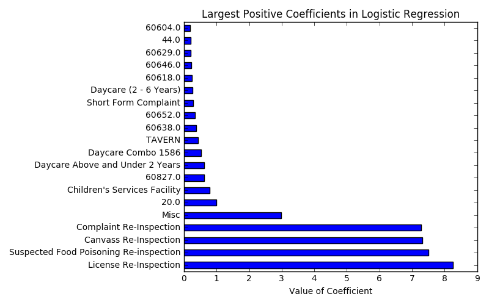
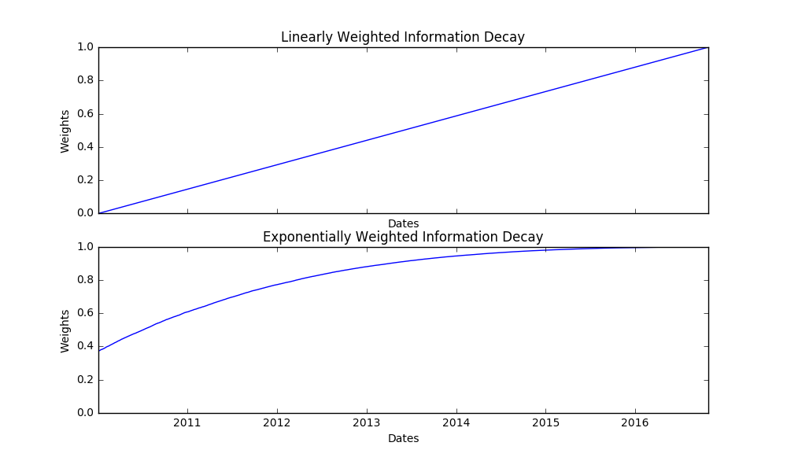

Predicting Food Inspection Outcomes
of Chicago Restaurants
Evan Brown, Felix Ruano, Gil Wassermann
Data Science, Fall 2016
Background
In 2014, Chicago’s Department of Innovation and Technology and Allstate’s Quantitative Research & Analytics came together in order to create a model to use publicly available data to predict food facility inspection outcomes. The project was motivated by the staggering statistic that assessing around 16,000 food establishments was tasked to only 36 inspectors. Before this project, food inspections were scheduled in a quasi-random way, the only criterion of which was that each facility was visited in the city-mandated time-frame. While this system ensured that every facility was checked, there was a very real possibility that an establishment with a critical health code violation could continue to operate for a long stretch of time, simply due to the scheduling of inspections. Given the potential for severe illness, Chicago rightly identified this as a public heath issue and turned to data science to solve this problem.
The goal of the project was to devise a statistically predictive and robust model that could identify the establishments with the highest potential for violating critical health codes. The most likely potential offenders could then be scheduled for inspection and barred from distriution first, minimizing the amount of time the public is exposed to potentially hazardous foodstuffs.
The outcome of the project was quite staggering. According to the Chicago/Allstate project's website the number of establishments with critical violations caught in a two month period increased from 55% to 69% through use of the data-driven workflow. Another impressive statistic is the establishments with critical violations were, on average caught about a week earlier.Although Chicago/Allstate project yielded amazing results, we are going to try our hand at this project. Hopefully, by using different predictor variables and employing different statistucal techniques we can propose an alternative model.
Predictors
One of the most interesting aspects of the Chicago/Allstate project were the plethora of different, and seemingly unrelated predictors that were leveraged by their model. Therefore predictor selection was a key component of our project.
Weather
Chicago is the Windy City. It can also get excruciatingly cold. One could imagine that restaurant employees would be less than thrilled to perform necessary hygiene proceedures in these conditions. Also, it might be possible that the inspectors themselves are less likely to make site visits in these conditions, which could induce lax behaviour on the part of the establishment owners.
While maximum and minimum past temperatures are useful metrics, we need a robust method in order to predict future temperatures as a function of inspection dates. Thankfully, temperatures are cyclical, which allows us to fit autoregressive time series models. After investigation of the time series' autocorrelation and partial autocorrelation functions, we fit an AR(12) model to monthly aggregates of the data. Below are our fits:
An AR(12) model was chosen after examination of an autocorrelogram and partial autocorrelogram of the data. We noticed that the-martial autocorrelogram cut off at the 365th lag of daily data. This suggests that an AR(365) model should be used. However, fitting 365 model parameters would most likely overfit the available data. We needed a more parsimonious solution. We then attempted to implement a SARIMA(0,0,0)x(1,0,0)365 model in order to reduce the number of fitted coefficients. Here, we ran into a logistical issue, which was that there was no available Python package that could perform this analysis (the SARIMAX model for `statsmodels` is currently under development). As a compromise, we settled on an ARIMA(12,0,0) (another way of describing the AR(12) model) model fit using monthly-aggregated weather data.
This AR model is useful as it allows us to predict future values of maximum and minimum temperatures.
Sanitary Code Complaints
One predictor in our model was created by seeing how many sanitary complaints have been accumulated in each ZIP code using the City of Chicago Open Data Portal since January 1st, 2011. This can be seen as a proxy for the importance placed on hygiene in each neighborhood. NB: This figure has been grouped by ward, which roughly equate to, but are slightly more granular, than ZIP code boundaries.

Particular Violations
One important result to come out of the model is that not all violations are created equal. In fact, there are some violations that lead to failed inspections while others do not. The chart below presents the 20 larges negative coefficients of a regularized logistic regression model on the data.
As we can see particular types of violation make up the most negative coefficients, which are those that push the value of a point towards 0, signifying a Fail. Let us look into what some of these complaints entail:
- Code 14 : Previous violation uncorrected
- Code 13 : Evidence of rodent or insect infestation, birds, turtles or other animals
- Code 3 : Potentially Hazardous Food does not meet temperature requirement during storage, preparation, display and service
It is clear that these are particularly critical violations and past incidents of these at a particular restaurant are a clear indication of a lack of a culture of hygiene.
Type of Inspection
Another key component of our model is the type of inspection that is being carried out. The chart below presents the most positive coefficients of a regularized logistic regression model on the data.
One thing that is made clear from this graph is that facilities which are being reinspected are more likely to pass a subsequent inspection. This is probably due to the fact that these restaurants have been goaded into more hygienic practices through a Fail or a Pass with Conditions. We can also see particular area codes here, showing how our location data is affecting the model.
Information Decay
In appraoching this project, it is necessary to consider the possibility that the amount of information one can infer from a restaurant's inspection results decays with time. This makes intuituve sense as any human reader would place a higher weight on more recent information than older information.
We used the following two weighting systems (normalized to be in the range 0 to 1) for each inspection day in order to discount past observations. Linearly weighted information decay sees an identical drop in information after each successive day whereas the exponentially weighted information decay sees an increasing amount of information decay for each successive day. Here, the halflife of the decay is one year.
Labels
Just as a quick overview of our dataset, here is a pie chart showing the breakdown of the observed inspection results. For our three-class models each of these segments is represented by a different class. In our two-class models, Pass with Conditions is termed as a Fail.
Model Selection
There were three main models that we identified and investigated for this project. These were a Logistic Regression, a Multiclass Logistic Regression (where we made a third class for Pass with Conditions) and a Random Forest. The latter model formed the foundation of the Chicago/Allstate model. Tuning these models with five-fold cross-validation and the evaluating the results yields the following:
| Category | Logistic Regression | Random Forest |
|---|---|---|
| True Positive | 66.6% | 67.9% |
| False Negative | 2.7% | 1.4% |
| True Negative | 26.0% | 25.0% |
| False Positive | 4.7% | 5.7% |
Metrics
For this project, we selected models based on metrics that are more granular than an accuracy score. For the purposes of this question, the two types of misclassification are not equivalent.
For the case of the false negative, let us imagine the outcome of a restaurant that has been predicted to fail, but actually passes. As a result of this model, an inspector would be sent to this facility quickly and then be able to ascertain that the establishment poses no health risk. The potential downside of this is unecessary expenditure of resources.
For the case of the false positive, we see a very different story. This type of restaurant would be predicted to pass, but are actually falling foul of a critical violation. A facility in this position would be a low priority inspection target, and therefore would be visited later. In this extra time taken to inspect the facility, they could diseminate potentially hazardous foods to the population.
In light of this we have selected our model to decrease the number of false positives in the model under five-fold cross-validation.
Information Decay
Including weighting schemes in our model led to a trade-off. In sklearn, for a Logistic Regression, there is no solver that allows LASSO regularization as well as attaching weights to the samples. We then attemped to fit the previously tuned Random Forest a freshly tuned Ridge Regularized Logistic Regression to the data. While the majority of the higher-level scores were comparable, in incorporating both linear and exponential decay we increased the number of false positives in our predicted values under five-fold cross-validation. Our analysis yielded the following results:
| Category | Logistic Regression | Random Forest |
|---|---|---|
| True Positive | 66.7% | 67.6% |
| False Negative | 2.6% | 1.7% |
| True Negative | 25.4% | 24.7% |
| False Positive | 5.3% | 6.0% |
Final Model
In light of the above results, we can conclude that the most effective model to use in this scenario is the tuned Logistic Regression. There are several reasons for this:
- The model is easily interpretable. The values of the coefficients can be used to explain the importance of different predictors to policy-makers in order to justify budget allocations.
- The model takes in a large number of predictors. LASSO regularization reduces the number of predictors used in order to suppress noise from unimportant predictors.
- There is likely to be a response to the data-driven workflow from facility operators. This model is lightweight enough to be refit easily to accomodate this response.
- Shown to be less prone to overfitting than the Random Forest model when applied to the whole dataset.
Bibliography, Links and Further Reading
Open source code in R for the Chicago/Allstate project